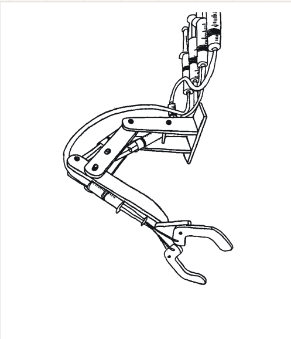

PROYECTO 01 // ROBÓTICA & HARDWARE
VENTURE
DishClaw Robotics
Desarrollo de garras robóticas adaptativas guiadas por visión artificial (DishClaw) que se montan directamente sobre piletas de cocina estándar para identificar, raspar, pre-lavar y acomodar vajilla de forma autónoma. Cierra el último cuello de botella manual en la automatización doméstica integrando sensores ópticos, cinemática articulada y agarre complaciente para superficies cerámicas húmedas.

ARQUITECTURA
Visión + Garra Adaptativa
PROTOTIPADO
OpenSCAD & ESP32-S3
ETAPA
Pre-Seed / Benchtop MVP